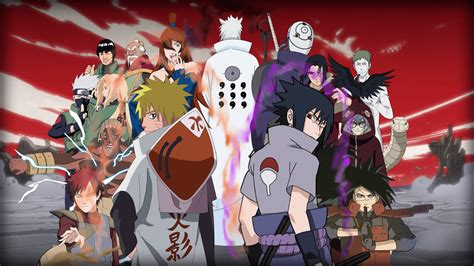
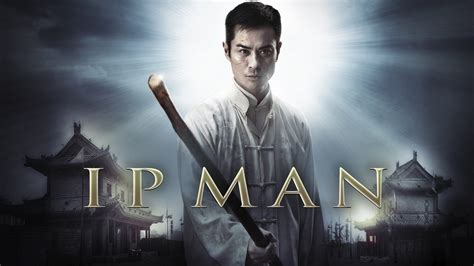
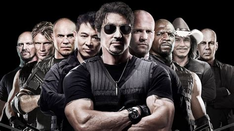
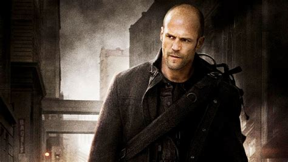

Naruto
Naruto Uzumaki, seorang ninja yang hiperaktif, periang, dan ambisius yang ingin mewujudkan keinginannya untuk mendapatkan gelar Hokage, pemimpin dan ninja terkuat di desanya.

Ip Man
Selama pedudukan Jepang di Cina, seorang ahli beladiri aliran Wing Chun terpaksa harus meninggalkan rumahnya demi menafkahi keluarga, dengan cara melatih ilmu beladiri - meskipun sebenarnya enggan.

The Expendables
The Expendables bercerita tentang sebuah kelompok tentara bayaran elit yang anggotanya memiliki berbagai kemampuan. Kelompok ini harus menjalankan sebuah misi berbahaya untuk menjatuhkan Jenderal Garza yang terkenal sebagai diktator di Pulau Vilena.

Fifthy Shade of Gray
Film Fifty Shades of Grey mengisahkan tentang hubungan percintaan antara Christian Grey dan Anastasia Steele atau Ana. Christian merupakan seorang pengusaha muda kaya raya, sementara Ana adalah mahasiswa tingkat akhir yang akan segera lulus.

The Mechanic
Arthur, salah satu pembunuh yang sempurna. Ketika sekutu terdekatnya, Harry, dibunuh, Arthur mencoba untuk membalaskan dendam temannya. Dia juga mengambil anak Harry, Steve, sebagai seorang mahasiswa.